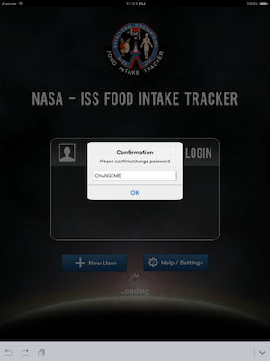

When the NASA ISS FIT iPad application starts for the first time, the default password is shown to the user.

Update the password, if necessary, and click Ok to continue using the application. The username and password can be changed afterwards in the iPad settings.